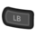
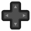

Steuerung
Zur Navigation springen
Zur Suche springen
| Anfangen | Der Spieler |
Optionen | Steuerung | Mobile Steuerungen |
Gesundheit | Energie | Fähigkeiten | Tageszyklus |
Alle Tasten können im Menü im Reiter Optionen neu zugewiesen werden 
Tastatur & Maus
| Taste | Beschreibung |
|---|---|
| W A S D |
W Nach oben bewegen A Nach links bewegen S Nach unten bewegen D Nach rechts bewegen |
| Werkzeug benutzen oder Gegenstand platzieren | |
| Prüfen/Interaktion | |
| Escape, E | Menü öffnen |
| F | Hofbuch öffnen |
| M | Karte öffnen |
| Y | Emote Menü öffnen |
| Gegenstand wechseln | |
| Tab | Reihe verschieben |
| Shift Links | Laufen |
| ?, T | Chat-Box öffnen |
| 1 - 0, - , + | Inventar Hotkeys |
| F4 | Screenshot-Modus |
Emotes
- Siehe auch: Mehrspieler/Emotes
Die folgenden Emotes sind durch das Drücken Y verfügbar:
Tipps
- Shift +
 auf ein Inventargegenstand/Stapel, um ihn in die oberste Reihe zu bewegen.
auf ein Inventargegenstand/Stapel, um ihn in die oberste Reihe zu bewegen. - Shift + um kontinuierlich Artikel im Inventarfenster eines Shops/Händlers zu kaufen.
- Shift + um jeweils 5 Gegenstände im Herstellungsmenü herzustellen.
- Halte Strg + Shift um 25 Gegenstände aufeinmal herzustellen.
- um 5 Artikel zu kaufen. Halte Shift + um weiterhin jeweils 5 Artikel zu kaufen.
- Halte Strg + Shift um 25 Gegenstände zu kaufen.
- Halte Strg + Shift + 1 um 999 Gegenstände gleichzeitig zu kaufen.
- einen Stapel im Inventar/Kiste, um einen einzelnen Gegenstand zu selektieren.
- Shift + um einen halben Stapel vom Inventar/Kisten zu entnehmen.
- Halte oder während du die Maus über eine Maschinenansammlung (z.B.., Fässer, Einmachgefäße, Reifefässer, Bienenhäuser) bewegst, um Gegenstände schnell einzusammeln.
- Trage einen weiteren Gegenstand während dem Entleeren von Maschinen, um sie automatisch wieder zu befüllen.
- Wenn der Gegenstand essbar ist, nutze , da das Spiel sonst fragt, ob der Gegenstand konsumiert werden soll.
- Entf um einen ausgewählten Gegenstand im Inventarfenster permanent zu löschen. (Nutze E/Escape, um das Inventar zu öffnen, dann auf ein Gegenstand/Stapel um ihn auszuwählen, dann drücke Entf.)
- Drückt man bei Spielstart die Esc, kann die Animation übersprungen werden und man landet sofort im Hauptmenü.
- Wenn die Meldung "<Gegenstand> essen?" erscheint, führt E/Escape zum Schließen der Meldung, ohne den Gegenstand zu essen und die "Y" Taste bestätigt die Frage und der Gegenstand wird konsumiert.
- Shift + auf einen Gegenstand im Katalog oder Möbelkatalog, um ihn direkt ins Inventar zu bewegen, anstelle ihn nur an den Mauszeiger zu binden. Dieses funktioniert auch bei Gegenständen im Ausstellstand beim Sterntautaler Volksfest.
- Ändere die Chat-Box Taste, wenn sie oft aus Versehen geöffnet wird. Alternativ drücke F4, um temporär im Screenshot-Modus Gegenstände in der unteren linken Ecke des Bildschirms zu platzieren.
Xbox One / Xbox 360 Controller
Die Controllersteuerung kann nicht angepasst werden.
In der Spielwelt
| Taste | Beschreibung |
|---|---|
Linker Joystick |
Gehen; Laufen |
Steuerkreuz |
Gehen |
Rechter Joystick |
Zeiger bewegen; Chatbox öffnen (reinklicken) |
Start (X360) Menü (XONE) |
Menü öffnen |
Zurück (X360) Ansicht (XONE) |
Hofbuch öffnen |
| Prüfen / Interaktion / Zeiger nutzen | |
| Werkzeug benutzen | |
| Menü öffnen | |
| Herstellungsmenü öffnen | |
| Gegenstand wechseln | |
| LB |
Reihe verschieben |
Im Menü
| Taste | Beschreibung |
|---|---|
Linker Joystick |
Zeiger bewegen |
Rechter Joystick |
Scrollen |
| Auswählen | |
Start |
Menü schließen |
| Menüreiter wechseln | |
| Bewege einen Gegenstand / Gegenstand nutzen (Köder, usw.) |
Controller-Karte
PS4 Controller
Die Controllersteuerung kann Systemweit unter Systemeinstellungen > Barrierefreiheit > Angepasste Tastenzuweisung aktivieren, angepasst werden.
In der Spielwelt
Im Menü
Controller-Karte
Erweiterte Steuerung
- Wird in Masse eingekauft, halte
 und , um den Kaufprozess zu beschleunigen.
und , um den Kaufprozess zu beschleunigen. - Im geöffneten Inventarmenü, drücke auf das
 Touchpad, um Gegenstände automatisch zu sortieren.
Touchpad, um Gegenstände automatisch zu sortieren. - Nach dem Selektieren von Gegenständen werden sie durch das Drücken von
 zum Mülleimer bewegt.
zum Mülleimer bewegt.
Switch Controller
Die Controllersteuerung kann Systemweit unter Systemeinstellungen > Controller und Sensoren > Knopfbelegung ändern, angepasst werden.
In der Spielwelt
| Taste | Beschreibung |
|---|---|
Linker Joystick |
Gehen; Laufen |
|  Steuerkreuz |
Gehen |
Rechter Joystick |
Zeiger bewegen; Chatbox öffnen (reinklicken) |
+ Knopf |
Menü öffnen |
- Knopf |
Hofbuch öffnen |
| Prüfen / Interaktion / Zeiger nutzen | |
| Werkzeug benutzen | |
| B | Menü öffnen |
| Herstellungsmenü öffnen | |
| Gegenstand wechseln | |
| Reihe verschieben |
Im Menü
| Taste | Beschreibung |
|---|---|
Linker Joystick |
Zeiger bewegen |
Rechter Joystick |
Scrollen |
| Auswählen | |
| B + Knopf |
Menü schließen |
| Menüreiter wechseln | |
| Bewege einen Gegenstand / Gegenstand nutzen (Köder, usw.) |
Controller-Karte
Tipps für das Platzieren von Objekten
- Einer der nützlichsten Steuerelemente ist der
 Rechte Stick. Er kann verwendet werden um Möbel, Teppiche, Fenster, usw. genau zu platzieren. Er ist relativ empfindlich jedoch sehr hilfreich insbesondere beim Platzieren von Fenstern.
Rechte Stick. Er kann verwendet werden um Möbel, Teppiche, Fenster, usw. genau zu platzieren. Er ist relativ empfindlich jedoch sehr hilfreich insbesondere beim Platzieren von Fenstern. - Verwende den Rechten Stick während ein Teppich ausgewählt ist und rotiere ihn mittels
 .
.
Tipps für die Werkzeugleiste
- Um den erhöhten Effekt bei verbesserten Werkzeugen wie etwa der Gießkanne zu erzielen, drücke und halte
 .
. - Halte während Interaktionen mit Dorfbewohnern ein Werkzeug, denn wird ein anderer Gegenstand gehalten, während man versucht mit einem Dorfbewohner zu sprechen, wird er verschenkt.
Inventartipps
- Wenn das Inventar organisiert wird, drücke , um einen einzelnen Gegenstand zu bewegen oder halte ihn, um mehrere zu bewegen.
- Nachdem Gegenstände im Inventar ausgewählt wurde, drücke
 , um sie zum Müll-Symbol zu bewegen.
, um sie zum Müll-Symbol zu bewegen. - Drücke im Inventar
 , um Gegenstände schnell zu sortieren.
, um Gegenstände schnell zu sortieren. - Durch das Drücken von sowohl als auch während des Kaufens von Artikeln wird ermöglicht Artikel doppelt so schnell zu kaufen.
Waffen
- führt einen normalen Angriff aus während die Sekundärattacke ausführt (z.B. Blocken).
Geschichte
- 1.4: "Neue" Eingabe von Tastendrücken entfernt bis die Taste losgelassen wird. Dieses erleichtert das Entleeren von einer großer Anzahl an Fässern, Einmachgefäßen, Kristallariums usw., indem die Taste gedrückt wird, ohne sie loszulassen. PC-Option zum Verschieben der Werkzeugleiste (aktive Inventarleiste) hinzugefügt. Emotes Menü hinzugefügt.
- 1.5.5: Das Halten von Strg + Shift erlaubt es dir nun Stapel mit 25 Gegenständen zu kaufen oder herzustellen.
- 1.6: Das Halten von Strg + Shift + 1 erlaubt es dir nun Stapel mit 999 Gegenständen zu kaufen.